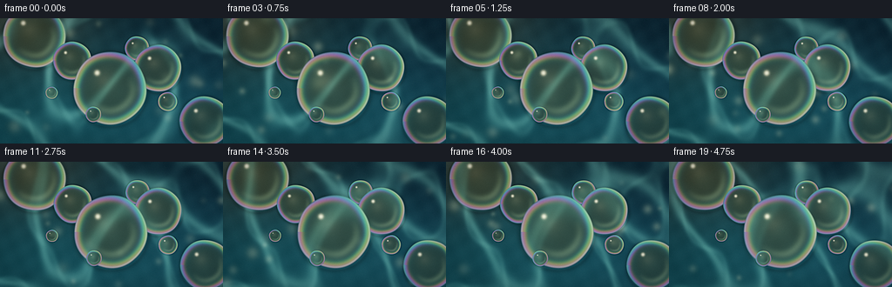
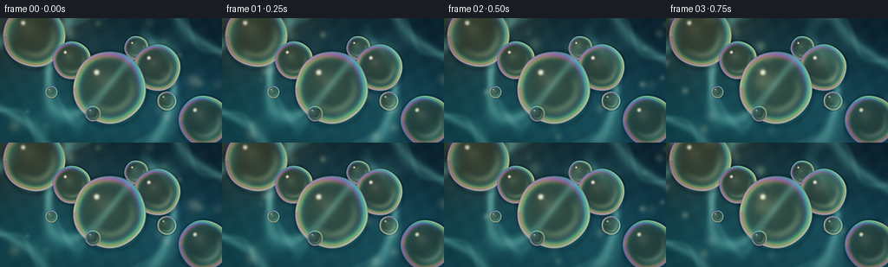
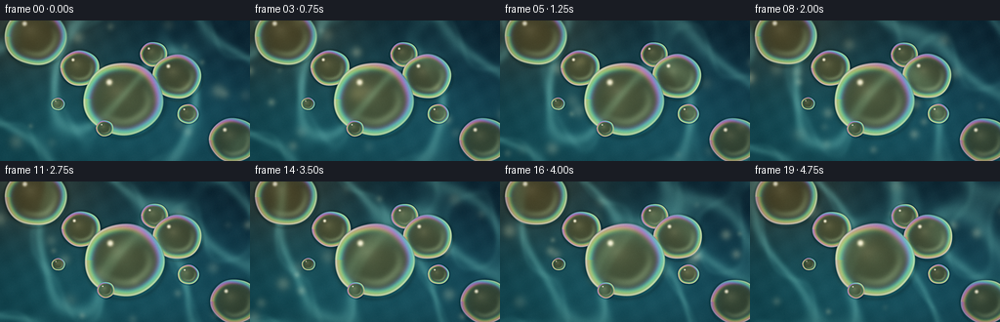
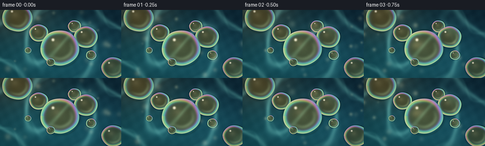

CODING AGENTS AS PIXEL WORLD MODELS
traex/DeepSeek-V4.1-Flash · phygen_077
点击播放 · 原生 RGB 像素
逐轮保存的候选
回放视频、检查图与代码变化。
每份候选均可单独播放。实际图片检查记录在下方工具轨迹中。
候选 01播放与检查图
点击播放 · 原生 RGB 像素

展开代码变化
--- 上一保存版本
+++ 本次保存版本
@@ -0,0 +1,287 @@
+from pathlib import Path
+
+import numpy as np
+from PIL import Image, ImageFilter
+
+import artifact_io
+
+
+CASE_DIR = Path(__file__).resolve().parent
+WIDTH, HEIGHT = 256, 144
+FRAME_COUNT, FPS = 20, 4.0
+SS = 3
+RW, RH = WIDTH * SS, HEIGHT * SS
+
+
+def smoothstep(edge0, edge1, value):
+ t = np.clip((value - edge0) / (edge1 - edge0), 0.0, 1.0)
+ return t * t * (3.0 - 2.0 * t)
+
+
+def bilinear(image, xs, ys):
+ xs = np.clip(xs, 0.0, image.shape[1] - 1.001)
+ ys = np.clip(ys, 0.0, image.shape[0] - 1.001)
+ x0 = xs.astype(np.int32)
+ y0 = ys.astype(np.int32)
+ fx = xs - x0
+ fy = ys - y0
+ fx = fx[..., None]
+ fy = fy[..., None]
+ top = image[y0, x0] * (1.0 - fx) + image[y0, x0 + 1] * fx
+ bottom = image[y0 + 1, x0] * (1.0 - fx) + image[y0 + 1, x0 + 1] * fx
+ return top * (1.0 - fy) + bottom * fy
+
+
+def soft_blur(image, radius):
+ data = np.clip(image * 255.0, 0, 255).astype(np.uint8)
+ filtered = Image.fromarray(data, "RGB").filter(ImageFilter.GaussianBlur(radius))
+ return np.asarray(filtered, dtype=np.float32) / 255.0
+
+
+# x and y are in output-image pixels; radii are in output-image pixels.
+DROPS = [
+ # Broad background droplets, intentionally cropped by the frame.
+ dict(x=39.0, y=20.0, r=36.0, phase=1.7, warm=0.22, depth=0.0),
+ dict(x=235.0, y=119.0, r=29.0, phase=4.4, warm=0.16, depth=0.0),
+ # Main floating group.
+ dict(x=126.0, y=80.0, r=42.0, phase=0.2, warm=0.46, depth=1.0),
+ dict(x=181.0, y=57.0, r=27.0, phase=2.5, warm=0.34, depth=0.9),
+ dict(x=83.0, y=49.0, r=22.0, phase=3.7, warm=0.38, depth=0.9),
+ dict(x=157.0, y=35.0, r=14.0, phase=5.1, warm=0.30, depth=0.8),
+ dict(x=192.0, y=95.0, r=11.0, phase=1.1, warm=0.42, depth=0.8),
+ dict(x=107.0, y=111.0, r=9.0, phase=4.9, warm=0.36, depth=0.8),
+ dict(x=59.0, y=85.0, r=7.0, phase=2.0, warm=0.28, depth=0.7),
+]
+
+
+def droplet_center(drop, t):
+ # A common, almost imperceptible surface drift plus a small individual bob.
+ drift_x = 1.15 * (t / 5.0)
+ drift_y = 0.45 * np.sin(0.30 * t + drop["phase"])
+ bob_x = 0.20 * np.sin(0.45 * t + drop["phase"] * 1.3)
+ bob_y = 0.16 * np.cos(0.38 * t + drop["phase"] * 0.7)
+ return (
+ (drop["x"] + drift_x + bob_x) * SS,
+ (drop["y"] + drift_y + bob_y) * SS,
+ )
+
+
+def water_background(t, rng):
+ yy, xx = np.mgrid[0:RH, 0:RW].astype(np.float32)
+ u = (xx / RW - 0.5) * (WIDTH / HEIGHT)
+ v = yy / RH - 0.5
+
+ # Deep water with a cool-to-warm sun gradient.
+ vertical = smoothstep(0.0, 1.0, yy / RH)
+ horizontal = smoothstep(0.0, 1.0, xx / RW)
+ bg = np.empty((RH, RW, 3), dtype=np.float32)
+ bg[..., 0] = 0.012 + 0.025 * vertical + 0.012 * horizontal
+ bg[..., 1] = 0.075 + 0.130 * vertical + 0.018 * horizontal
+ bg[..., 2] = 0.105 + 0.145 * vertical + 0.035 * horizontal
+
+ sun = np.exp(-(((u + 0.73) / 0.52) ** 2 + ((v + 0.58) / 0.42) ** 2))
+ broad_light = np.exp(-(((u + 0.18) / 0.86) ** 2 + ((v + 0.12) / 0.66) ** 2))
+ bg += sun[..., None] * np.array([0.135, 0.105, 0.052], np.float32)
+ bg += broad_light[..., None] * np.array([0.025, 0.060, 0.055], np.float32)
+
+ # Smooth, moving wave field. Ridges become the bright caustic network.
+ w1 = np.sin(5.4 * u + 2.0 * np.sin(2.7 * v - 0.42 * t) + 0.48 * t)
+ w2 = np.sin(-2.5 * u + 5.8 * v + 1.35 * np.sin(3.4 * u + 0.35 * t) - 0.36 * t)
+ w3 = np.sin(7.7 * u - 3.6 * v + 1.05 * np.sin(4.1 * v + 0.28 * t) + 0.27 * t)
+ field = (w1 + 0.82 * w2 + 0.66 * w3) / 2.48
+ caustic = np.exp(-((field / 0.135) ** 2))
+ caustic_fine = np.exp(-(((field + 0.21 * np.sin(12.0 * u + 4.0 * v)) / 0.070) ** 2))
+ caustic = np.clip(caustic + 0.40 * caustic_fine, 0.0, 1.25)
+ caustic *= 0.72 + 0.28 * broad_light
+ bg += caustic[..., None] * np.array([0.095, 0.215, 0.205], np.float32)
+ bg += (caustic ** 2)[..., None] * np.array([0.055, 0.085, 0.060], np.float32)
+
+ # Fine surface relief, kept very subtle beneath the defocus.
+ ripple = (
+ np.sin(34.0 * u + 11.0 * v + 1.6 * t)
+ * np.sin(29.0 * v - 8.0 * u - 1.2 * t)
+ )
+ bg += ripple[..., None] * np.array([0.006, 0.012, 0.013], np.float32)
+
+ # Small out-of-focus glints make the sunlit water feel spatially deep.
+ glints = np.zeros((RH, RW), dtype=np.float32)
+ for index in range(18):
+ gx = rng.uniform(-0.92, 0.92)
+ gy = rng.uniform(-0.48, 0.48)
+ sigma = rng.uniform(0.010, 0.034)
+ amp = rng.uniform(0.12, 0.52)
+ glints += amp * np.exp(
+ -((u - gx) ** 2 + (v - gy) ** 2) / (2.0 * sigma * sigma)
+ )
+ bg += glints[..., None] * np.array([0.38, 0.40, 0.28], np.float32)
+
+ # The near plane is slightly less focused than the droplet cluster.
+ bg = soft_blur(bg, 1.15 * SS)
+ return bg
+
+
+def add_contact_shadow(background, cx, cy, radius, phase):
+ pad = radius * 1.32
+ x0 = max(0, int(cx - pad))
+ x1 = min(RW, int(cx + pad) + 2)
+ y0 = max(0, int(cy - pad))
+ y1 = min(RH, int(cy + pad) + 2)
+ if x0 >= x1 or y0 >= y1:
+ return
+
+ yy, xx = np.mgrid[y0:y1, x0:x1].astype(np.float32)
+ # A tiny lower-right offset gives a sunlit contact shadow.
+ dx = xx - cx - 0.018 * radius
+ dy = yy - cy - 0.032 * radius
+ q = np.sqrt(dx * dx + dy * dy) / radius
+ q = q * (1.0 + 0.008 * np.sin(5.0 * np.arctan2(dy, dx) + phase))
+ ring = np.exp(-(((q - 1.015) / 0.085) ** 2))
+ inner = smoothstep(1.06, 0.96, q)
+ shadow = 0.26 * ring * (1.0 - inner)
+ background[y0:y1, x0:x1] *= (1.0 - shadow[..., None])
+
+
+def render_drop(image, background, drop, t):
+ cx, cy = droplet_center(drop, t)
+ radius = drop["r"] * SS
+ pad = radius * 1.15
+ x0 = max(0, int(cx - pad))
+ x1 = min(RW, int(cx + pad) + 2)
+ y0 = max(0, int(cy - pad))
+ y1 = min(RH, int(cy + pad) + 2)
+ if x0 >= x1 or y0 >= y1:
+ return
+
+ yy, xx = np.mgrid[y0:y1, x0:x1].astype(np.float32)
+ dx = xx - cx
+ dy = yy - cy
+ theta = np.arctan2(dy, dx)
+
+ # Slightly non-circular surface-tension boundary; the variation is tiny.
+ organic = 1.0 + 0.010 * np.sin(5.0 * theta + drop["phase"] + 0.30 * t)
+ organic += 0.006 * np.sin(3.0 * theta - 0.7 * drop["phase"])
+ q = np.sqrt(dx * dx + dy * dy) / (radius * organic)
+ q_inside = np.clip(q, 0.0, 0.9995)
+ nz = np.sqrt(1.0 - q_inside * q_inside)
+ nx = (dx / (radius * organic)) / np.maximum(nz, 0.18)
+ ny = (dy / (radius * organic)) / np.maximum(nz, 0.18)
+ normal_length = np.sqrt(nx * nx + ny * ny + 1.0)
+ nx /= normal_length
+ ny /= normal_length
+ nz /= normal_length
+
+ # Refraction through the oil lens: enlarged and gently displaced water.
+ sample_x = cx + dx * 0.72 - 0.045 * radius
+ sample_y = cy + dy * 0.72 - 0.020 * radius
+ refracted = bilinear(background, sample_x, sample_y)
+ transmitted = refracted * np.array([0.78, 0.87, 0.80], np.float32)
+
+ body = (
+ transmitted * 0.68
+ + np.array([0.29, 0.205, 0.070], np.float32) * (0.20 + 0.20 * drop["warm"])
+ + np.array([0.018, 0.095, 0.095], np.float32) * 0.20
+ )
+ body *= (0.72 + 0.38 * nz)[..., None]
+
+ # Thin-film interference around the rim; thickness varies around the drop.
+ thickness = 0.55 + 0.34 * np.cos(theta - 0.45 + 0.15 * drop["phase"])
+ hue = 15.5 * q + 2.3 * thickness + 1.15 * theta + 0.22 * t + 0.45 * drop["phase"]
+ film = np.empty_like(body)
+ film[..., 0] = 0.5 + 0.5 * np.cos(hue)
+ film[..., 1] = 0.5 + 0.5 * np.cos(hue + 2.05)
+ film[..., 2] = 0.5 + 0.5 * np.cos(hue + 4.10)
+ film = np.clip(0.28 + film * 0.72, 0.0, 1.0)
+ rim_band = np.exp(-(((q - 0.905) / 0.105) ** 2))
+ edge_band = smoothstep(0.76, 0.98, q)
+ iridescence = np.clip(rim_band * (0.42 + 0.58 * edge_band), 0.0, 1.0)
+ body = body * (1.0 - 0.55 * iridescence[..., None]) + film * iridescence[..., None] * 0.62
+
+ # Fresnel sky reflection and a directional highlight from the upper left.
+ fresnel = np.clip(1.0 - nz, 0.0, 1.0) ** 2.1
+ sky = np.array([0.20, 0.56, 0.61], np.float32)
+ body += sky * (0.34 * fresnel)[..., None]
+
+ light = np.array([-0.52, -0.68, 0.52], np.float32)
+ light /= np.linalg.norm(light)
+ halfway = light + np.array([0.0, 0.0, 1.0], np.float32)
+ halfway /= np.linalg.norm(halfway)
+ ndoth = np.clip(nx * halfway[0] + ny * halfway[1] + nz * halfway[2], 0.0, 1.0)
+ specular = ndoth ** 72
+ soft_specular = ndoth ** 13
+ body += specular[..., None] * np.array([1.30, 1.18, 0.86], np.float32)
+ body += soft_specular[..., None] * np.array([0.13, 0.12, 0.08], np.float32)
+
+ # The transmitted caustic is strongest on the lower-right side.
+ focus = np.exp(-(((q - 0.61) / 0.105) ** 2))
+ lower_right = np.clip((dx * 0.55 + dy * 0.83) / radius, 0.0, 1.0)
+ body += (focus * lower_right)[..., None] * np.array([0.22, 0.27, 0.17], np.float32)
+
+ # A small, hard glint and a warm rim keep the droplets legible at 256 px.
+ glint = np.exp(
+ -(
+ (dx + 0.35 * radius) ** 2 + (dy + 0.42 * radius) ** 2
+ )
+ / (2.0 * (0.045 * radius) ** 2)
+ )
+ glint *= smoothstep(0.0, 0.10, 1.0 - q)
+ body += glint[..., None] * np.array([1.20, 1.12, 0.86], np.float32)
+
+ contact_dark = np.exp(-(((q - 0.995) / 0.022) ** 2))
+ body *= (1.0 - 0.22 * contact_dark)[..., None]
+ rim_light = np.exp(-(((q - 0.972) / 0.026) ** 2))
+ rim_tint = 0.55 + 0.45 * np.cos(hue + 0.8)
+ body += rim_light[..., None] * np.array([0.24, 0.35, 0.30], np.float32) * rim_tint[..., None]
+
+ alpha = smoothstep(1.012, 0.985, q)
+ region = image[y0:y1, x0:x1]
+ region *= (1.0 - alpha[..., None])
+ region += body * alpha[..., None]
+
+
+def render_frame(index):
+ t = index / FPS
+ rng = np.random.default_rng(7713 + index)
+ background = water_background(t, rng)
+
+ # Contact shadows are applied to water before the transparent lenses.
+ for drop in DROPS:
+ cx, cy = droplet_center(drop, t)
+ add_contact_shadow(background, cx, cy, drop["r"] * SS, drop["phase"])
+
+ image = background.copy()
+ # Back-to-front ordering keeps the small foreground droplets crisp.
+ for drop in sorted(DROPS, key=lambda item: item["y"]):
+ render_drop(image, background, drop, t)
+
+ # Filmic shoulder, bloom, and a restrained optical vignette.
+ image = 1.0 - np.exp(-1.42 * np.maximum(image, 0.0))
+ bright = np.clip((image - 0.67) / 0.33, 0.0, 1.0)
+ bloom = soft_blur(bright * np.array([1.0, 0.84, 0.60], np.float32), 2.7 * SS)
+ image += 0.20 * bloom
+
+ yy, xx = np.mgrid[0:RH, 0:RW].astype(np.float32)
+ vx = (xx / RW - 0.5) * 2.0
+ vy = (yy / RH - 0.5) * 2.0
+ vignette = 1.0 - 0.17 * np.clip((vx * vx * 0.64 + vy * vy * 0.92) ** 1.35, 0.0, 1.0)
+ image *= vignette[..., None]
+
+ image = np.clip(image, 0.0, 1.0)
+ image = np.power(image, 0.93)
+ grain_rng = np.random.default_rng(9137 + index)
+ grain = grain_rng.normal(0.0, 0.0075, (RH, RW, 1)).astype(np.float32)
+ image = np.clip(image + grain, 0.0, 1.0)
+
+ small = Image.fromarray((image * 255.0 + 0.5).astype(np.uint8), "RGB")
+ small = small.resize((WIDTH, HEIGHT), Image.Resampling.LANCZOS)
+ small = small.filter(ImageFilter.UnsharpMask(radius=1.0, percent=42, threshold=3))
+ return np.asarray(small, dtype=np.uint8)
+
+
+def main():
+ frames = np.stack([render_frame(index) for index in range(FRAME_COUNT)])
+ artifact_io.save(frames, CASE_DIR)
+ print(f"saved {frames.shape[0]} frames at {WIDTH}x{HEIGHT}, {FPS:g} fps")
+
+
+if __name__ == "__main__":
+ main()
候选 02播放与检查图
点击播放 · 原生 RGB 像素


展开代码变化
--- 上一保存版本
+++ 本次保存版本
@@ -34,19 +34,19 @@
def soft_blur(image, radius):
data = np.clip(image * 255.0, 0, 255).astype(np.uint8)
- filtered = Image.fromarray(data, "RGB").filter(ImageFilter.GaussianBlur(radius))
+ filtered = Image.fromarray(data).filter(ImageFilter.GaussianBlur(radius))
return np.asarray(filtered, dtype=np.float32) / 255.0
# x and y are in output-image pixels; radii are in output-image pixels.
DROPS = [
# Broad background droplets, intentionally cropped by the frame.
- dict(x=39.0, y=20.0, r=36.0, phase=1.7, warm=0.22, depth=0.0),
- dict(x=235.0, y=119.0, r=29.0, phase=4.4, warm=0.16, depth=0.0),
+ dict(x=36.0, y=16.0, r=32.0, phase=1.7, warm=0.22, depth=0.0),
+ dict(x=239.0, y=123.0, r=25.0, phase=4.4, warm=0.16, depth=0.0),
# Main floating group.
- dict(x=126.0, y=80.0, r=42.0, phase=0.2, warm=0.46, depth=1.0),
- dict(x=181.0, y=57.0, r=27.0, phase=2.5, warm=0.34, depth=0.9),
- dict(x=83.0, y=49.0, r=22.0, phase=3.7, warm=0.38, depth=0.9),
+ dict(x=126.0, y=80.0, r=41.0, phase=0.2, warm=0.46, depth=1.0),
+ dict(x=181.0, y=57.0, r=25.0, phase=2.5, warm=0.34, depth=0.9),
+ dict(x=82.0, y=49.0, r=20.0, phase=3.7, warm=0.38, depth=0.9),
dict(x=157.0, y=35.0, r=14.0, phase=5.1, warm=0.30, depth=0.8),
dict(x=192.0, y=95.0, r=11.0, phase=1.1, warm=0.42, depth=0.8),
dict(x=107.0, y=111.0, r=9.0, phase=4.9, warm=0.36, depth=0.8),
@@ -56,10 +56,10 @@
def droplet_center(drop, t):
# A common, almost imperceptible surface drift plus a small individual bob.
- drift_x = 1.15 * (t / 5.0)
- drift_y = 0.45 * np.sin(0.30 * t + drop["phase"])
- bob_x = 0.20 * np.sin(0.45 * t + drop["phase"] * 1.3)
- bob_y = 0.16 * np.cos(0.38 * t + drop["phase"] * 0.7)
+ drift_x = 1.50 * (t / 5.0)
+ drift_y = 0.42 * np.sin(0.42 * t + drop["phase"])
+ bob_x = 0.36 * np.sin(0.68 * t + drop["phase"] * 1.3)
+ bob_y = 0.24 * np.cos(0.57 * t + drop["phase"] * 0.7)
return (
(drop["x"] + drift_x + bob_x) * SS,
(drop["y"] + drift_y + bob_y) * SS,
@@ -89,12 +89,12 @@
w2 = np.sin(-2.5 * u + 5.8 * v + 1.35 * np.sin(3.4 * u + 0.35 * t) - 0.36 * t)
w3 = np.sin(7.7 * u - 3.6 * v + 1.05 * np.sin(4.1 * v + 0.28 * t) + 0.27 * t)
field = (w1 + 0.82 * w2 + 0.66 * w3) / 2.48
- caustic = np.exp(-((field / 0.135) ** 2))
+ caustic = np.exp(-((field / 0.125) ** 2))
caustic_fine = np.exp(-(((field + 0.21 * np.sin(12.0 * u + 4.0 * v)) / 0.070) ** 2))
- caustic = np.clip(caustic + 0.40 * caustic_fine, 0.0, 1.25)
+ caustic = np.clip(caustic + 0.31 * caustic_fine, 0.0, 1.18)
caustic *= 0.72 + 0.28 * broad_light
- bg += caustic[..., None] * np.array([0.095, 0.215, 0.205], np.float32)
- bg += (caustic ** 2)[..., None] * np.array([0.055, 0.085, 0.060], np.float32)
+ bg += caustic[..., None] * np.array([0.073, 0.175, 0.174], np.float32)
+ bg += (caustic ** 2)[..., None] * np.array([0.045, 0.070, 0.050], np.float32)
# Fine surface relief, kept very subtle beneath the defocus.
ripple = (
@@ -158,8 +158,8 @@
theta = np.arctan2(dy, dx)
# Slightly non-circular surface-tension boundary; the variation is tiny.
- organic = 1.0 + 0.010 * np.sin(5.0 * theta + drop["phase"] + 0.30 * t)
- organic += 0.006 * np.sin(3.0 * theta - 0.7 * drop["phase"])
+ organic = 1.0 + 0.012 * np.sin(5.0 * theta + drop["phase"] + 0.36 * t)
+ organic += 0.007 * np.sin(3.0 * theta - 0.7 * drop["phase"] + 0.21 * t)
q = np.sqrt(dx * dx + dy * dy) / (radius * organic)
q_inside = np.clip(q, 0.0, 0.9995)
nz = np.sqrt(1.0 - q_inside * q_inside)
@@ -177,29 +177,29 @@
transmitted = refracted * np.array([0.78, 0.87, 0.80], np.float32)
body = (
- transmitted * 0.68
- + np.array([0.29, 0.205, 0.070], np.float32) * (0.20 + 0.20 * drop["warm"])
- + np.array([0.018, 0.095, 0.095], np.float32) * 0.20
+ transmitted * 0.75
+ + np.array([0.34, 0.235, 0.055], np.float32) * (0.24 + 0.24 * drop["warm"])
+ + np.array([0.015, 0.075, 0.075], np.float32) * 0.22
)
body *= (0.72 + 0.38 * nz)[..., None]
# Thin-film interference around the rim; thickness varies around the drop.
thickness = 0.55 + 0.34 * np.cos(theta - 0.45 + 0.15 * drop["phase"])
- hue = 15.5 * q + 2.3 * thickness + 1.15 * theta + 0.22 * t + 0.45 * drop["phase"]
+ hue = 14.0 * q + 2.5 * thickness + 1.15 * theta + 0.22 * t + 0.45 * drop["phase"]
film = np.empty_like(body)
film[..., 0] = 0.5 + 0.5 * np.cos(hue)
film[..., 1] = 0.5 + 0.5 * np.cos(hue + 2.05)
film[..., 2] = 0.5 + 0.5 * np.cos(hue + 4.10)
film = np.clip(0.28 + film * 0.72, 0.0, 1.0)
- rim_band = np.exp(-(((q - 0.905) / 0.105) ** 2))
- edge_band = smoothstep(0.76, 0.98, q)
- iridescence = np.clip(rim_band * (0.42 + 0.58 * edge_band), 0.0, 1.0)
- body = body * (1.0 - 0.55 * iridescence[..., None]) + film * iridescence[..., None] * 0.62
+ rim_band = np.exp(-(((q - 0.895) / 0.112) ** 2))
+ edge_band = smoothstep(0.72, 0.98, q)
+ iridescence = np.clip(rim_band * (0.44 + 0.62 * edge_band), 0.0, 1.0)
+ body = body * (1.0 - 0.48 * iridescence[..., None]) + film * iridescence[..., None] * 0.74
# Fresnel sky reflection and a directional highlight from the upper left.
fresnel = np.clip(1.0 - nz, 0.0, 1.0) ** 2.1
sky = np.array([0.20, 0.56, 0.61], np.float32)
- body += sky * (0.34 * fresnel)[..., None]
+ body += sky * (0.29 * fresnel)[..., None]
light = np.array([-0.52, -0.68, 0.52], np.float32)
light /= np.linalg.norm(light)
@@ -208,7 +208,7 @@
ndoth = np.clip(nx * halfway[0] + ny * halfway[1] + nz * halfway[2], 0.0, 1.0)
specular = ndoth ** 72
soft_specular = ndoth ** 13
- body += specular[..., None] * np.array([1.30, 1.18, 0.86], np.float32)
+ body += specular[..., None] * np.array([1.42, 1.24, 0.88], np.float32)
body += soft_specular[..., None] * np.array([0.13, 0.12, 0.08], np.float32)
# The transmitted caustic is strongest on the lower-right side.
@@ -230,7 +230,7 @@
body *= (1.0 - 0.22 * contact_dark)[..., None]
rim_light = np.exp(-(((q - 0.972) / 0.026) ** 2))
rim_tint = 0.55 + 0.45 * np.cos(hue + 0.8)
- body += rim_light[..., None] * np.array([0.24, 0.35, 0.30], np.float32) * rim_tint[..., None]
+ body += rim_light[..., None] * np.array([0.32, 0.43, 0.34], np.float32) * rim_tint[..., None]
alpha = smoothstep(1.012, 0.985, q)
region = image[y0:y1, x0:x1]
@@ -254,10 +254,10 @@
render_drop(image, background, drop, t)
# Filmic shoulder, bloom, and a restrained optical vignette.
- image = 1.0 - np.exp(-1.42 * np.maximum(image, 0.0))
+ image = 1.0 - np.exp(-1.52 * np.maximum(image, 0.0))
bright = np.clip((image - 0.67) / 0.33, 0.0, 1.0)
bloom = soft_blur(bright * np.array([1.0, 0.84, 0.60], np.float32), 2.7 * SS)
- image += 0.20 * bloom
+ image += 0.23 * bloom
yy, xx = np.mgrid[0:RH, 0:RW].astype(np.float32)
vx = (xx / RW - 0.5) * 2.0
@@ -271,7 +271,7 @@
grain = grain_rng.normal(0.0, 0.0075, (RH, RW, 1)).astype(np.float32)
image = np.clip(image + grain, 0.0, 1.0)
- small = Image.fromarray((image * 255.0 + 0.5).astype(np.uint8), "RGB")
+ small = Image.fromarray((image * 255.0 + 0.5).astype(np.uint8))
small = small.resize((WIDTH, HEIGHT), Image.Resampling.LANCZOS)
small = small.filter(ImageFilter.UnsharpMask(radius=1.0, percent=42, threshold=3))
return np.asarray(small, dtype=np.uint8)
候选 03播放与检查图
候选 04播放与检查图
点击播放 · 原生 RGB 像素


展开代码变化
--- 上一保存版本
+++ 本次保存版本
@@ -133,7 +133,7 @@
# A tiny lower-right offset gives a sunlit contact shadow.
dx = xx - cx - 0.018 * radius
dy = yy - cy - 0.032 * radius
- q = np.sqrt(dx * dx + dy * dy) / radius
+ q = np.sqrt(dx * dx + (dy / 0.91) ** 2) / radius
q = q * (1.0 + 0.008 * np.sin(5.0 * np.arctan2(dy, dx) + phase))
ring = np.exp(-(((q - 1.015) / 0.085) ** 2))
inner = smoothstep(1.06, 0.96, q)
@@ -160,11 +160,12 @@
# Slightly non-circular surface-tension boundary; the variation is tiny.
organic = 1.0 + 0.012 * np.sin(5.0 * theta + drop["phase"] + 0.36 * t)
organic += 0.007 * np.sin(3.0 * theta - 0.7 * drop["phase"] + 0.21 * t)
- q = np.sqrt(dx * dx + dy * dy) / (radius * organic)
+ y_radius = radius * (0.91 + 0.006 * np.sin(0.31 * t + drop["phase"]))
+ q = np.sqrt(dx * dx + (dy / 0.91) ** 2) / (radius * organic)
q_inside = np.clip(q, 0.0, 0.9995)
nz = np.sqrt(1.0 - q_inside * q_inside)
nx = (dx / (radius * organic)) / np.maximum(nz, 0.18)
- ny = (dy / (radius * organic)) / np.maximum(nz, 0.18)
+ ny = (dy / (y_radius * organic)) / np.maximum(nz, 0.18)
normal_length = np.sqrt(nx * nx + ny * ny + 1.0)
nx /= normal_length
ny /= normal_length
@@ -172,13 +173,13 @@
# Refraction through the oil lens: enlarged and gently displaced water.
sample_x = cx + dx * 0.72 - 0.045 * radius
- sample_y = cy + dy * 0.72 - 0.020 * radius
+ sample_y = cy + dy * 0.77 - 0.020 * radius
refracted = bilinear(background, sample_x, sample_y)
- transmitted = refracted * np.array([0.78, 0.87, 0.80], np.float32)
+ transmitted = refracted * np.array([0.88, 0.74, 0.55], np.float32)
body = (
- transmitted * 0.75
- + np.array([0.34, 0.235, 0.055], np.float32) * (0.24 + 0.24 * drop["warm"])
+ transmitted * 0.72
+ + np.array([0.37, 0.225, 0.045], np.float32) * (0.25 + 0.25 * drop["warm"])
+ np.array([0.015, 0.075, 0.075], np.float32) * 0.22
)
body *= (0.72 + 0.38 * nz)[..., None]
@@ -213,7 +214,7 @@
# The transmitted caustic is strongest on the lower-right side.
focus = np.exp(-(((q - 0.61) / 0.105) ** 2))
- lower_right = np.clip((dx * 0.55 + dy * 0.83) / radius, 0.0, 1.0)
+ lower_right = np.clip((dx * 0.55 + dy * 0.83) / y_radius, 0.0, 1.0)
body += (focus * lower_right)[..., None] * np.array([0.22, 0.27, 0.17], np.float32)
# A small, hard glint and a warm rim keep the droplets legible at 256 px.
可观测工具轨迹
实际执行的命令与返回图片。
命令 1exit 0
/bin/bash -c 'ls -la'
命令 2exit 0
/bin/bash -c "pwd && rg --files -g 'prompt.txt' -g 'GENERATION_RULES.md' -g 'task_spec.json' -g '"'!node_modules'"'"
命令 3exit 0
/bin/bash -c 'cat GENERATION_RULES.md'
命令 4exit 0
/bin/bash -c 'cat prompt.txt'
命令 5exit 0
/bin/bash -c 'cat task_spec.json'
命令 6exit 0
/bin/bash -c "sed -n '1,240p' artifact_io.py"
命令 7exit 0
/bin/bash -c 'python generate.py'
命令 8exit 0
/bin/bash -c 'ls -lh frames inspection.png transition_check.png pixels.npz index.html'
命令 9exit 0
/bin/bash -c "python - <<'PY'
from PIL import Image
import numpy as np
for p in ['frames/00.png','frames/10.png','frames/19.png','inspection.png']:
a=np.asarray(Image.open(p).convert('RGB')).astype(float)
print(p, a.shape, 'mean', np.round(a.mean((0,1)),1), 'p05/p50/p95', np.round(np.percentile(a,[5,50,95]),1), 'clip', int((a>=254).sum()), int((a<=1).sum()))
PY"命令 10exit 0
/bin/bash -c "python - <<'PY'
from PIL import Image
im=Image.open('inspection.png')
im.resize((1536,495), Image.Resampling.NEAREST).save('.tmp/inspection_large.png')
PY"命令 11exit 1
/bin/bash -c 'command -v chafa || command -v viu || command -v jp2 || command -v img2txt'
命令 12exit 0
/bin/bash -c "python - <<'PY'
from PIL import Image
import numpy as np
im=np.asarray(Image.open('frames/00.png').convert('RGB'))
# ANSI truecolor thumbnail; enough to inspect the actual spatial layout in a terminal.
h,w,_=im.shape
for y in range(0,h,6):
line=[]
for x in range(0,w,4):
block=im[y:y+6,x:x+4].reshape(-1,3).mean(0).astype(int)
line.append(f'\\x1b[48;2;{block[0]};{block[1]};{block[2]}m ')
print(''.join(line)+'\\x1b[0m')
PY"命令 13exit 0
/bin/bash -c "python - <<'PY'
from PIL import Image
import numpy as np
im=np.asarray(Image.open('frames/00.png').convert('RGB')).astype(int)
# Sample horizontal cross-sections through the three largest central droplets.
for y,x,r in [(80,126,42),(57,181,27),(49,83,22)]:
print('drop',x,y,r,'center',im[y,x], 'outside', im[y,max(0,x-r-8)], im[y,min(255,x+r+8)])
for d in range(-r,r+1,6):
xx=min(255,max(0,x+d)); print(f'{d:+3d}:{tuple(im[y,xx])}',end=' ')
print('\\n')
PY"命令 14exit 0
/bin/bash -c "python - <<'PY'
from PIL import Image
import numpy as np
A=np.asarray(Image.open('frames/00.png').convert('RGB')).astype(float)
B=np.asarray(Image.open('frames/01.png').convert('RGB')).astype(float)
C=np.asarray(Image.open('frames/10.png').convert('RGB')).astype(float)
D=np.asarray(Image.open('frames/19.png').convert('RGB')).astype(float)
for n,x in [('01-00',B-A),('10-00',C-A),('19-10',D-C)]:
print(n,'MAE',np.abs(x).mean(),'p95',np.percentile(np.abs(x),95),'max',np.abs(x).max())
PY"命令 15exit 0
/bin/bash -c 'python generate.py'
命令 16exit 0
/bin/bash -c "python - <<'PY'
from PIL import Image
import numpy as np
for p in ['frames/00.png','frames/10.png','frames/19.png']:
a=np.asarray(Image.open(p).convert('RGB')).astype(float)
print(p, 'mean', np.round(a.mean((0,1)),1), 'p05/p50/p95', np.round(np.percentile(a,[5,50,95]),1), 'clip', int((a>=254).sum()), int((a<=1).sum()))
A=np.asarray(Image.open('frames/00.png')).astype(float)
for y,x,r in [(80,126,41),(57,181,25),(49,82,20)]:
print('drop',x,y,r,'center',tuple(A[y,x].astype(int)), 'outside',tuple(A[y,max(0,x-r-8)].astype(int)), tuple(A[y,min(255,x+r+8)].astype(int)))
PY"命令 17exit 0
/bin/bash -c "python - <<'PY'
from PIL import Image
import numpy as np
im=np.asarray(Image.open('frames/00.png').convert('RGB'))
h,w,_=im.shape
# 64x36 luminance/color summary, one character per 4x4 cell.
chars=' .:-=+*#%@'
for y in range(0,h,4):
s=''
for x in range(0,w,4):
p=im[y:y+4,x:x+4].mean((0,1))
lum=(0.2126*p[0]+0.7152*p[1]+0.0722*p[2])/255
s+=chars[min(len(chars)-1,int(lum*len(chars)*1.6))]
print(s)
PY"命令 18exit 0
/bin/bash -c 'python generate.py'
命令 19exit 0
/bin/bash -c "python - <<'PY'
from pathlib import Path
import json, wave
import numpy as np
from PIL import Image
root=Path('.')
spec=json.loads(Path('task_spec.json').read_text())
files=sorted(Path('frames').glob('*.png'))
assert len(files)==spec['frames']==20
shapes=[]
for f in files:
with Image.open(f) as im:
assert im.size==(spec['width'],spec['height'])
shapes.append(np.asarray(im).shape)
assert len(set(shapes))==1
packed=np.load('pixels.npz')['pixels']
assert packed.shape==(spec['height'],spec['width'],spec['frames']) and packed.dtype==np.uint32
assert Path('generate.py').is_file() and Path('index.html').is_file()
assert Path('inspection.png').is_file() and Path('transition_check.png').is_file()
assert not (root/'audio.wav').exists()
print('validated:', len(files), 'frames', shapes[0], 'pixels', packed.shape, 'fps', spec['fps'])
print('artifacts:', ', '.join(sorted(p.name for p in root.iterdir() if p.is_file())))
PY"保存候选 4 份；完成命令 19 次；可验证图片返回 0 张。原始 API 响应与完整日志保留在本地。